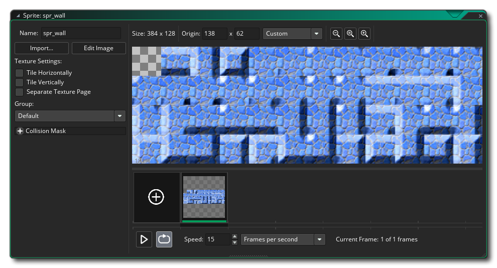
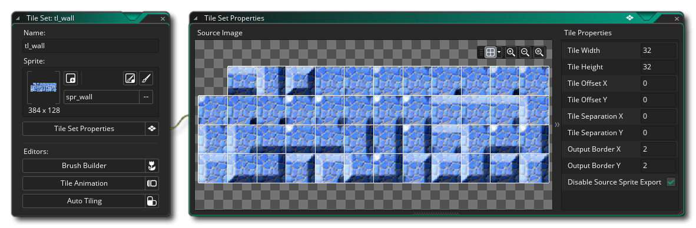
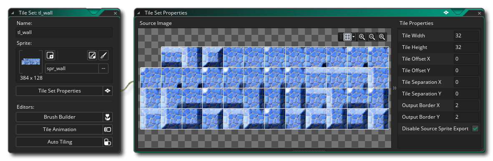

Tile Sets are created from sprites, but they are also classified as a separate resources since the way that GameMaker Studio 2 handles them is a bit different to both sprites and objects. Essentially, a tile is simply a graphical resource that gets drawn to the screen with very little CPU/GPU overhead, making them ideal for designing any static items in levels, and a tile set is a collection of tiles created together in one sprite. Tiles can only be rectangular or square (if you want anything other than a this, then you'll need to create a regular sprite and use the Asset Layer in the room editor, which we'll discuss later). In this quick start guide, we'll look at a tile set for making walls in a top down game.
To start with, we need to have a tile set image, which would be done in the sprite editor/image editor, and the final sprite would look something like this: 
Notice that the very first tile is blank in that image. The way that the tilemap for the room is stored in GameMaker Studio 2 means that tile (0) will always need to be blank as it's essentially the "delete" tile or the "empty space" tile. So, when creating your maps the top left corner tile will always need to be empty in this way. Also note that while the image above shows a full wall tile set with 47 tiles, you may not need so many as you can rotate and flip tiles when placing them in the room editor later.
With a sprite created, we can go ahead and define the tile set,
which means you have to first create a new tile set resource by
right clicking  the Tile Set resource folder and
selecting Create. This will open the Tile Set Editor
where you can then add the sprite and set its properties:

the Tile Set resource folder and
selecting Create. This will open the Tile Set Editor
where you can then add the sprite and set its properties:

We have set tile set size to 32px, and we have left the rest of the values at their default, since we have no need of offsets or anything like that. You can now close the tile set editor, as you can use the tile set "as is" to create tilemap layers in the room editor. If you want to know more about the advanced functions of the Tile Set Editor, then see the relevant section of the manual. Now to move on to creating sound effects for your project...